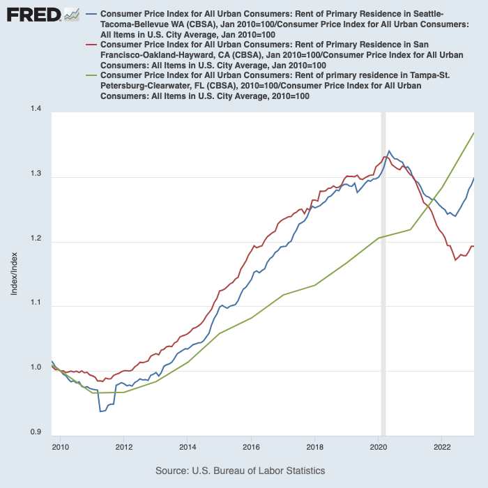

Ned Resnikoff offers a great rejoinder to my recent piece, Only the state can house us. Go read it if you haven't!
Lots of places in that piece, I felt like Resnikoff didn't have an accurate understanding of my position. That's my fault, not his. I thought I'd try to clarify.
First a narrow thing. Resnikoff writes
What’s instead needed — in fact, what he describes as “an inevitability” — is a massive social housing program that will create millions of government-owned, government-subsidized housing units across the country.
That isn't quite right. I don't propose some giant unified "social program", and I don't propose that housing units should necessarily remain government-owned.
I propose — and yes, I do think quite inevitable — a much more dirigiste approach to housing. The state would subsidize development of new communities in places and under terms private business otherwise would not invest. Call it a CHIPS Act for new cities.
I hope we would experiment with a variety of models, from the Singapore model — basically sales of publicly developed homes to residents — to "Red Vienna"-style rentals from a municipal corporation. But I believe we need new cities built in greenfields, not just liberalized infill of already desirable places, in order to meet the housing challenges that we currently face, and the much more difficult challenges that await us. I think we will require an interventionist state.
If you want more specifics on the kind of development I'd propose, please see Microcities.
Resnikoff does not comment on the reason I give why state-led housing production is inevitable. We are already in a miserable housing affordability crisis. I argue that forseeable climate events are likely to provoke migrations and shortages at a different scale than moving-to-amenity price-bidding has thus far.
I wonder, does Resnikoff agree or disagree that this is at least a plausible scenario? If it happens, our housing problem is going to feel less like today's growth ill-accommodated, and more like wartime logistics. That's why state action is inevitable. We can either develop capabilities within the state to superintend construction of high-quality, dense, mixed-use communities, or we can fail to do so, and then build slapdash, utilitarian, barrack communities that will remain people's homes for years if not lifetimes.
I think it's urgent that we develop state capacity to endow high quality new communities quickly and at scale, now, so that we know it as a practical thing when the crisis comes and overwhelms us. The alternative will become a terrible scar to our body politic, slums for millions of people. And if we are going to start building new communities now, to develop this state capacity, why not make it an alternative to the NIMBY-YIMBY trench wars?
In general, I think Resnikoff read my piece as more of a broadside against YIMBY than I intended. I'd characterize myself as YIMBY-skeptical or YIMBY-critical. But that's not the same as anti-YIMBY (or NIMBY, or PHIMBY, or whatever).
People who share a lot of values often disagree more bitterly than people who are more straightforward adversaries. Betrayal is a crueler cut than enmity.
I share a lot of values with YIMBYs!
-
I agree with YIMBYs that housing scarcity in desirable places to live is the signal domestic crisis of our time. We can't fix anything if we don't restore housing abundance in safe, lively, places with good schools that offer residents a high quality of life.
-
For a lot of reasons, I agree with YIMBY visions of urbanism. Exurban McMansions may offer some residents a high quality of life, but in ways that cannot possibly scale and are necessarily exclusive. Dense mixed-use development is what does scale, is (contra some green intuitions) the way to house large numbers of humans with a light environmental footprint and also with the greatest joy, if it is done well. In a good future, the majority of humans live at near-Manhattan densities, and car travel is for trips, not for everyday life. That's best for human flourishing, and best for the planet.
"Done well" is an important caveat! Density is a magnifying glass, both for social virtue and for social vice. Bad density is very bad. But excellent, delightful, dense development is a tractible sociotechnical problem. They build out little utopias in Europe all the time.
I disagree with YIMBYs about some important things too.
-
As a matter of tactics, I think that focusing on infill rather than greenfield densification is a big mistake. For all the reasons described in my prior piece — what Resnikoff characterizes as "futility theses" — I don't think that infill densification in already desirable places will come anywhere close to matching the scale of the problem.
-
As a matter of ethics, even though I agree with YIMBY ends, I have problems with their means. I think they often understate and deny the costs of the changes they propose to incumbent residents. I think the people they often mock as NIMBYs have understandable reasons for the positions they take, motivations that merit social and political respect. Left YIMBYs sometimes suggest that what they propose is a kind of redistribution. (Matt Yglesias once described the YIMBY project as "as 'radical land reform' in the sense of the Latin American left.") I'm for a lot of redistribution, but I think we all can understand that when redistributing, questions about from whom, to whom, how it is proposed to be done, how it will actually work out in practice, are really important.
These two critiques are mutually reinforcing. One reason I think infill densification in already desirable places is tactically challenging is because achieving it often involves threatening perhaps the most intimate and powerful circumstance of peoples' lives, their homes and neighborhoods. Some people are filthy rich and who cares if they don't like the new development they can move. But most Americans struggle to afford housing in safe, desirable, lively places. When they have done so, when they have achieved that dream, it becomes the anchor of, and usually the crowning economic achievement of, their lives. Many households have devoted years of energy and volunteerism to maintaining and improving neighborhoods the market now finds so desirable.
In poorer commuinities, the rentals might not be a crowning economic achievement, but most of people's "wealth" takes the form of easily disruptible, informal social capital. Wealthier reformers don't even perceive this, because they are accustomed to meeting their needs primarily through the market and perhaps insurance from immediate family. But busting up a neighborhood, with all its informal connections and friendships, its habits of help, people who owe and are owed one, is, as a wise man once said, a big fucking deal. This sort of displacement can be a terrible redistribution away from the already poor.
For all of these reasons — futility, I know! — residents of existing neighborhoods, of every social class, have very powerful reasons to seek to exercise control over whether and how their neighborhoods change. Tactically, fighting against that seems like it should be a last rather than first resort, if you mean to achieve housing abundance soon. Ethically, even if — fuck futility! — you are able to organize over the heads of, outside the boundaries of, affected neighborhoods and impose "wins" from above, well, that's good for housing abundance. But it may or may not be a net good thing. It depends.
I have never understood, at some deep basal level, why a reformer would choose to go for housing abundance in this way. It seems to me, historically, when metropolitan areas have grown in population quickly, the unit at which change has occurred is neighborhood or new town, rather than project-by-project infill in stably settled places.
My hypothesis is that we got this approach, and have kept doubling down on it, because a generation of young professionals really wanted to move to particular, already settled, places. They disliked that they either were priced out, or — to their credit! — they were not, but disliked that they were pricing out incumbent residents.
It is understandable that actual people coming of age want to move to particular existing places. It does an individual little good to imagine that someday there might be other wonderful choices. But once we shift our perspective from wanderer to reformer, an imagination of what could be, of alternatives we are capable of achieving that are just a bit less adjacent to the status quo, strikes me as essential.
Anyway, I am not "anti-YIMBY". I lived in San Francisco for eight and a half years. On controversies surrounding particular projects, I usually favored the YIMBY side. I couldn't help but notice, however, and it did upset me that almost always the fights over some ridiculous abuse of historical preservation were in the gentrifying Mission, rather than, say, in upzone-the-affluent Pacific Heights. I was very excited by Hunter's Point, a greenfield which I hope will be developed well, because it was going to dispossess or displace no one. I was very happy to see new construction in my own Richmond district. I wish I could afford to live in it.
We left San Francisco in large part because we were priced out of housing. We had a rent-stabilized apartment, thank God, but the kid was growing. Four-hundred-and-some square feet wasn't cutting it. I had to save my marriage. Now I drive infinite miles for every stupid errand in Pinellas County, Florida, rather than just strolling down Clement Street.
We'd move back to SF in a second if the twelve hundred square feet we have here were more affordable. If there were a plausible, ethical way to make that happen over a relevant time horizon, I would be all for it. I think there is not, though. I think the plausible ways aren't ethical, and the ethical ways aren't plausible.
Well, that's not quite right. There are the approaches YIMBYs historically haven't emphasized. If, as Resnikoff suggests, I am out-of-date on actually existing YIMBY-ism, and YIMBYs now devote part of their considerable talents to promoting dense new development on greenfields beyond the borders of existing cities, then I am very happy to stand corrected. The plausible way to create housing abundance rapidly is through new neighborhoods and new towns. The San Francisco Bay Area is full of undeveloped land.
I don't love some of the backers of California Forever, and I fear their stealth buyout approach to addressing holdout problems may have doomed the project. But I wish them every success. I hope the project ushers in a new age of new-town development, one pursued in a manner less adversarial to publics constituted through our imperfectly democratic state, including at the local level. Eminent domain does exist, even if the backers of this project are ideologically opposed. Some of the people involved in California Forever are people I knew in San Francisco as prominent YIMBYs. At that time they seemed skeptical of new-town development, fearing that in a US context it would necessarily degnerate to single-family suburbs, endless sprawl. I am very glad their views have changed and I support their current work. (Manhattanize Mare Island!)
There are lots of old-school YIMBY initiatives that pass my cost-benefit test, that I support, but that I think can only help on the margin. I support "by right" construction of ADUs and missing middle housing, for example. Obviously it's a judgment call. I respect the residents who adamantly disagree. I have deeply mixed feelings about organizing over their heads. But my judgment is that given the low density of single-family neighborhoods and the small scale of the construction legalized, this sort of development represents a pretty limited threat to the character of those neighborhoods and the lives of the people who live there.
So I support these reforms. But I still feel icky substituting my judgment about how big an imposition these laws are for residents' own. I think local government is a critical component of democracy, and would prefer approaches that persuade local governments by first persuading their constituents, rather than coerce local governments over the opposition of incumbent residents.
In any case, I don't believe these approaches can achieve the scale or densification that our housing and environmental crises demand. Will these mostly car-served neighborhoods become garlanded by walkable amenities and public transit, once ADUs and triplexes emerge? We can hope so. Maybe my quantitative intuitions are off, my imagination too limited. But while it's per se good that more people will get to live in the places they'd like to live, it's per se bad to overrule existing residents. I have a hard time seeing these reforms impacting supply enough to dent the cost crisis, so long as so many people seek to live a relatively small number of extraordinarily places.
As I emphasized in my prior piece, I think the heart of the problem is geographic inequality. As long as so few places — the "superstar cities", a few "super zips" in other metros — are where the amenities and opportinties and safety and good schools are, we will have a whole country trying to pile into them. You really would have to Manhattanize to have any hope of accommodating that sort of demand, and that really would overthrow the character of people's neighborhoods.
Resnikoff is right to point out that the YIMBY movement has gone from success to success, that it's achieved on its path more than I ever expected it would. Maybe you should just write off my judgment? Why are you even reading this?
But if you are still here, I'll say again, even with YIMBYs' surprising achievements, land-use liberalization continues to strike me as an approach incapable of meeting the scale of the problem.
Politicians often boast about reforms using past reforms as their baseline. Dodd-Frank, Obama reminded us, represented the toughest regulation of the financial system since the New Deal. That was true! It still left a predatory, broken, corrupt financial system in place, and our pathway toward neofeudalism undisturbed. Solutions don't need to meet the scale of low expectations from past nonsolutions. They need to meet the scale of the actual problem. YIMBY organizing has succeeded much more than history suggested or fatalists like me imagined that it would. Yet the question remains, while demand remains heavily concentrated in a few places, can supply ever match its fluctuations, even under very liberal land-use regimes, without development of new greenfields in active collaboration with the state?
I don't know. Neither do you, dear reader. You know my guess. What's yours? Here's the Orlando, Redfearn study I cited in the previous piece, whose conclusions match my priors. Enthusiastic YIMBYs have their studies too.
Here's a graph. It's rent inflation in three metros, adjusted for overall inflation. The graph will mechanically underestimate fluctuations, up and down, because the numerator is a component of the denominator. It's laggy: New rent prices fluctuate more quickly than the average rents in the CPI basket. It's quick and dirty. I've normalized everything to 100 on January 1, 2010.

It is very easy to explain this graph in terms of demand. The 2010s were a tech-led decade, so San Francisco and Seattle both rocket. Seattle permitted a lot more housing over the period, more than three times as much in popuation-adjusted terms. (They are cities of similar size.) Their inflation-adjusted rental prices nevertheless grow in lockstep from 2012 to 2020. Seattle's price growth slightly exceeded San Francisco's, despite its much more vigorous construction. Post-pandemic, prices decline and stay declined in construction-lagging San Francisco, but, after a dip, bounce back to their highs in Seattle.
Throughout the 2010s, both tech-powerhouse cities faced strong housing demand, whose price inelasticity meant Seattle's incremental new supply barely registered. Post-pandemic, tech opportunities have softened a bit in both markets, but San Francisco has been plagued in the national conversation by a persistent "drug-addled shithole" narrative while Seattle has not.
It's easy to explain these price curve from a demand perspective. From a supply perspective... not so much. Prices rose faster, and have stayed higher, in the city that permitted much more.
I've also graphed my current home, the Tampa metro. Tampa's permitting rate, per population, has been comparable to Seattle or Houston, but post-pandemic demand (to which my own family contributed) has made it the rent-price-growth leader of all the metros I have looked at. (Fuck me.) Miami has permitted less and seen less price growth than Tampa.
Permitting is not a great proxy for YIMBY land-use policy, because it is a function of demand as well as regulation. For San Francisco vs Seattle, I think we can agree that both cities faced relentlessly high-demand over the 2010s, so they're a good match for a supply-side policy comparison. If you tell me the Miami, Tampa comparison is no good because lower starting prices drew population to Tampa, which is what drew the permitting rather than any difference in land use regulation, I'll shrug and say yeah, that might be right. Nevertheless, there's always a demand story in these price graphs. You sure have to squint to tell supply stories.
A counterexample might be Austin, which by the permitting numbers looks like YIMBY paradise, and which is currently enjoying a delightful rent price slump. Austin's rent component of CPI seems not to be available on FRED, so I can't include it in my lazy little experiment.
But I think the YIMBY story is probably a big part of what's going on in Austin. My view, which is the view beautifully documented in the Orlando, Redfearn paper, is that while metros are small, supply very often can keep up, because there are greenfields near demand drivers still to be developed. Once greenfields are exhausted — because the city is confined to a penninsula, or because it has sprawled so far that new exurbs would be far from drivers of demand, or because regulation prevents further sprawl — then cities cannot keep up. When demand is high, prices will spike, but greenfield expansion really can help. Infill is by its nature an order of magnitude harder and slower and more expensive.
YIMBYs in my experience have diverse views about "sprawl". I think the correct position is that
-
greenfield development should be encouraged, not restricted; and
-
the political challenge is to ensure that edge-city growth takes the form of dense, mixed-use development, rather than single-family-home cul-de-sacs.
Even when supply growth can't make a dent in price, it doesn't follow that barricading supply is good policy. All that extra housing in Seattle translates to a lot more people who get to live there, people who choose living there even at high Seattle prices. That's a real benefit. But if the housing was permitted over strenuous objections of nearby residents, that betrays real costs too. Those costs and benefits are hard to quantify. My intuitions mostly side with the YIMBYs, that the benefits probably exceeded the costs. But I could be wrong, and I don't see a way out our housing catastrophe in that kind of delicate balance.
I think the work we have to do is to guide demand into places we can supply at scale.
Resnikoff writes
But the other reason is that we won’t be able to demand manage our way out of population growth in superstar cities. We already tried that in the second half of the twentieth century when we downzoned San Francisco, Los Angeles, and New York to cap population growth. How did that work out?
Despite our miscommunications, I think Resnikoff understands that merely capping supply in places with lots of demand is not a form of "demand management" I would propose or support.
But we have never tried to manage demand by using state power intentionally, to endow attractive new communities, and then to subsidize amenities, opportunities, and relationships under which agglomeration effects will likely take hold, bootstrapping "natural" demand.
Does Resnikoff think this impossible? Does he have a "futility thesis" of his own?